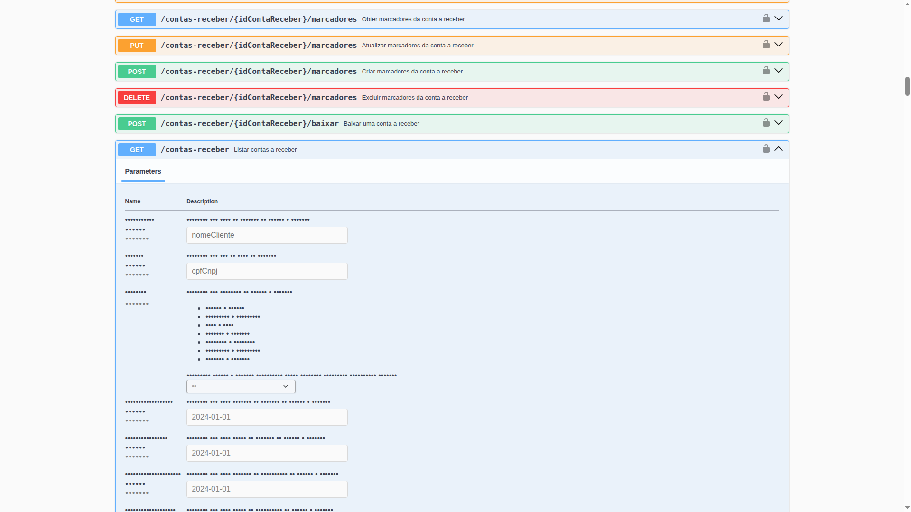
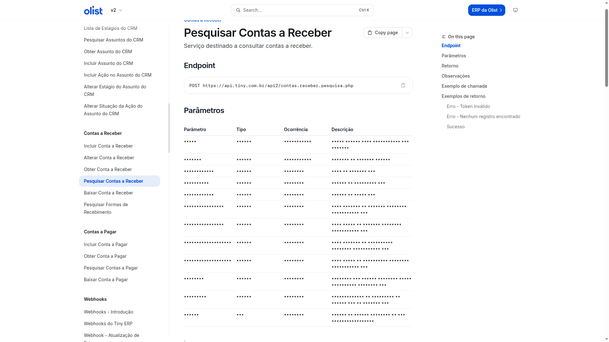

Filtrar contas a receber por CPF ou CNPJ pela API
Importante
- A listagem não tem o parâmetro idContato. Para filtrar pelo cliente, informe o CPF ou CNPJ em cpfCnpj.
Instruções
-
Acesse Configurações > Configurações ERP.
-
Na seção Outras configurações, abra Token API.

-
Copie o valor do campo Token. Ele é o identificador único da conta e permite operações por API. Se o campo estiver vazio, clique em Gerar Token API.

-
Autentique a chamada com o token no formato Bearer.
-
Envie GET /contas-receber e informe o parâmetro opcional cpfCnpj com o CPF ou CNPJ do cliente. A API devolve a listagem de contas a receber filtrada por esse documento.

Informações adicionais
Outros filtros da mesma listagem
Na chamada GET /contas-receber, estes parâmetros também são opcionais: nomeCliente, situacao, datas de emissão e vencimento, numeroDocumento, numeroBanco, idNota, idVenda, marcadores, dataAtualizacao, orderBy, limit e offset.
A API v2 não filtra por CPF ou CNPJ
Na operação Pesquisar Contas a Receber da API v2, token e formato são obrigatórios. Informe ao menos um destes filtros: nome_cliente, numero_doc, numero_banco, data de emissão, data de vencimento, situacao (aberto, pago, cancelada, parcial) ou id_origem. O parâmetro pagina também existe. Essa pesquisa não filtra por CPF, CNPJ nem por id do contato.
